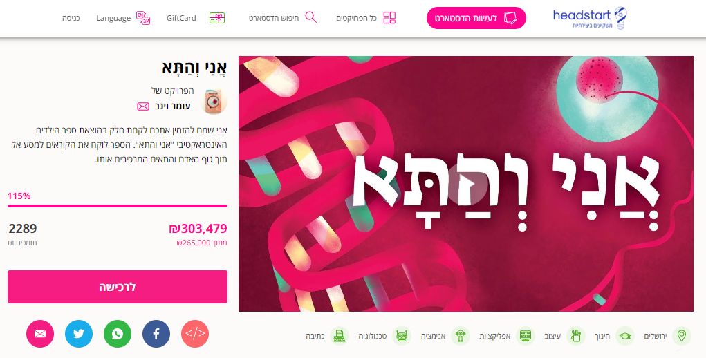
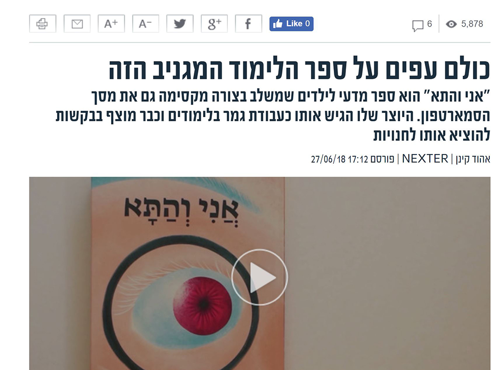

My Cells and I
Description:
An interactive children's book that combines a mobile phone and takes the reader on a journey into the human body.
The book merges print and screen to create a unique educational experience, allowing children to explore body tissue, cells, organelles, and more through 3D pop-up elements and an interactive mobile app.
An interactive children's book that combines a mobile phone and takes the reader on a journey into the human body.
The book merges print and screen to create a unique educational experience, allowing children to explore body tissue, cells, organelles, and more through 3D pop-up elements and an interactive mobile app.
Technical information: Unity

Headstart campaign: https://headstart.co.il/project/44927

Body tissue
Organelles
Fetus
The project was made as a final project
Bezalel Academy of Arts and Design, Jerusalem
Narrated by Amitay Gilad
Press

Mako

Next, 12